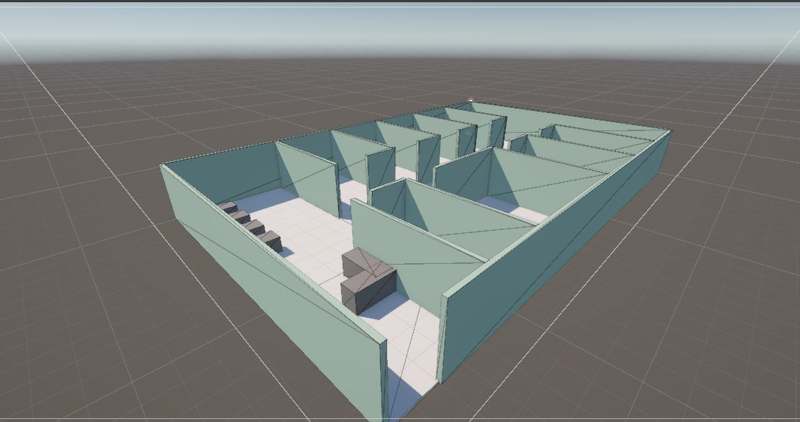
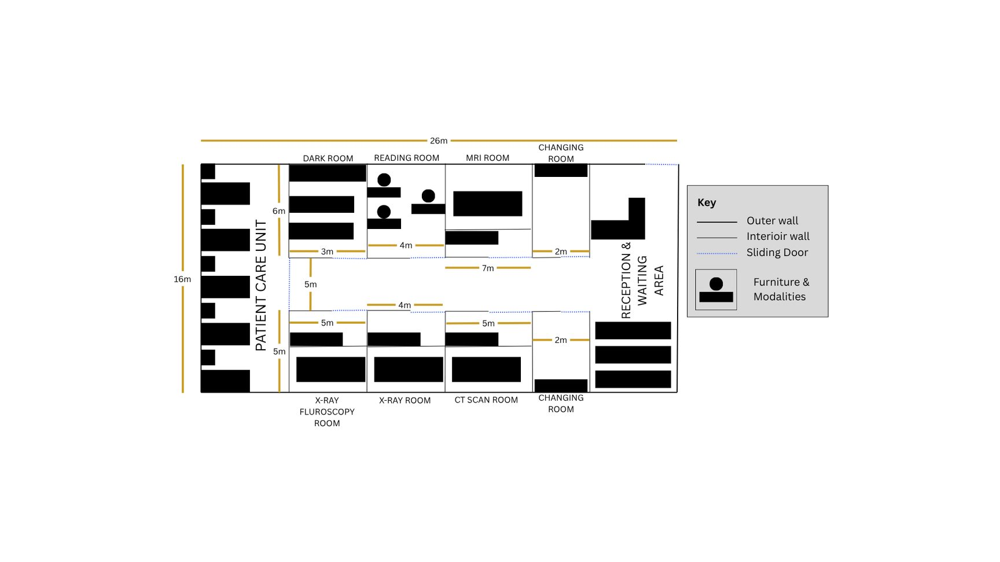
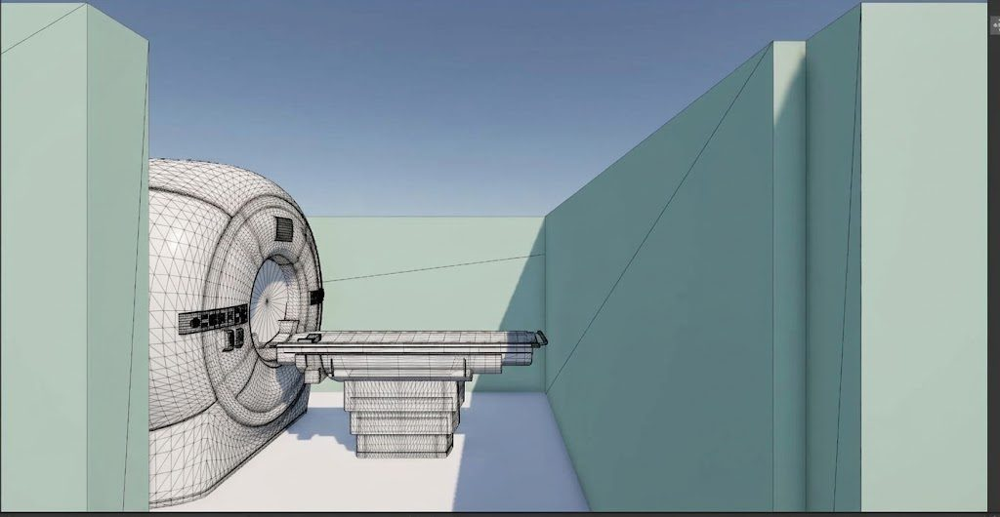
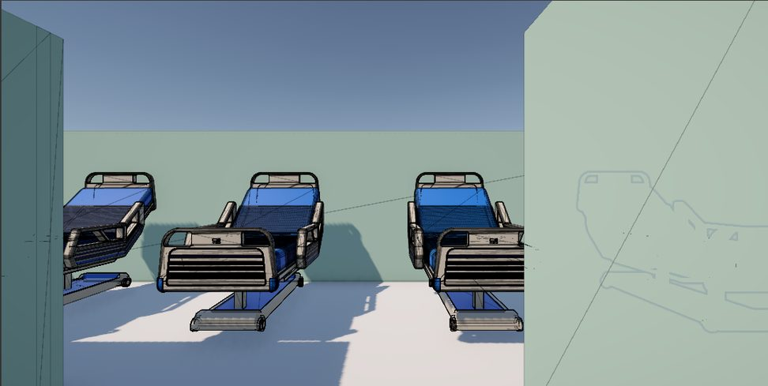
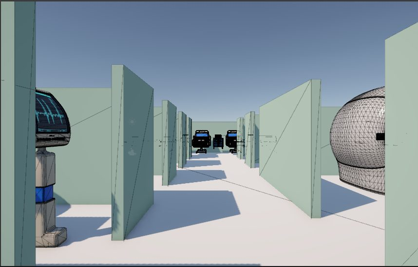

Scarce access
Imaging machines are costly and often in clinical use.
Welcome to
Enter. Explore. Engineer.
Choose a department to begin. Radiology is open. The rest unlock soon.
Explore the Radiology Department first.
The Radiology Department is waiting whenever you want to go back in.
SimServ is a virtual radiology learning and simulation platform. Learners walk through a 3D radiology department, inspect imaging equipment and follow guided workflows, all in a browser on a standard lab computer.
It is built for education and training only. It does not support medical diagnosis or control of real equipment.

Interactive 3D machines and rooms.
Learn anywhere and repeat safely.
For students, clinicians and engineers.
Radiology equipment training is hard to access and hard to scale.
Imaging machines are costly and often in clinical use.
Hands-on practice carries safety and equipment risk.
Textbooks and slides rarely show how machines work.
Department workflow is rarely taught end to end.
A 26 m by 16 m ward with MRI, CT and X-ray suites.




UniversitiesHospitalsTraining centresHealthcare professionalsService engineers
Faculty of Engineering, Science, Technology and Management, Ziauddin University, Karachi.